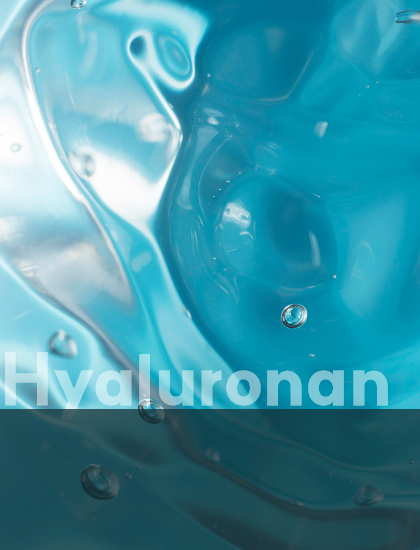

피부 속부터 촘촘하게 수분을 채우고 외부 자극으로부터 보호하는
새롭게 진화한 포뮬러로 건강한 피부를 지켜보세요.
피부를 진정시키고 보호하며,
손상된 피부 장벽을 강화해
건강한 피부로 가꿔줍니다.
피부를 진정시키고 과잉 피지를
조절하며, 외부 자극으로부터
피부를 보호하는 데 도움을 줍니다.

피부에 깊은 보습을 공급하고
수분을 유지시켜 촉촉하고 탄력 있는
피부로 가꿔줍니다.